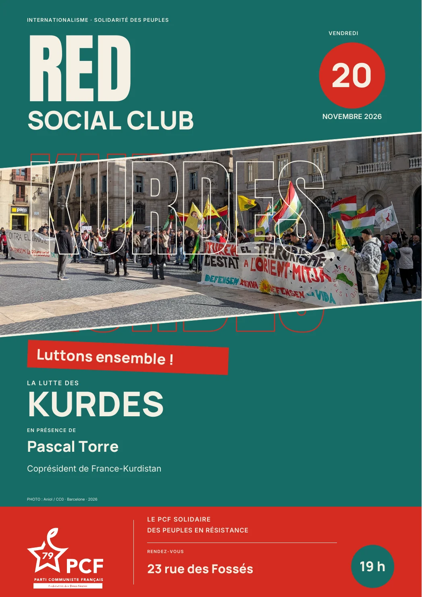
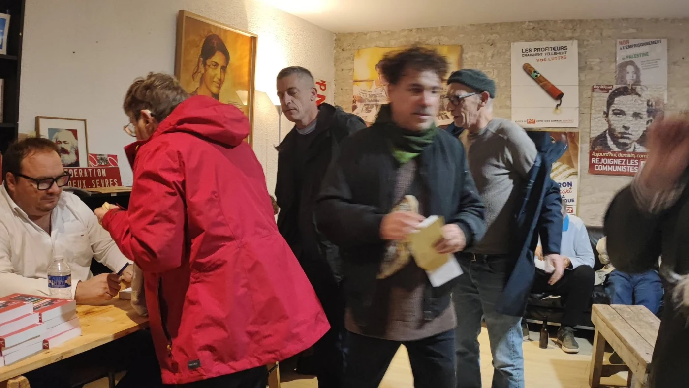

Rencontre · 17 novembre 2026
À Niort, Fabien Gay ouvre le débat sur les aides publiques aux entreprises
La fédération des Deux-Sèvres a reçu le sénateur communiste et directeur de L’Humanité pour un débat suivi d’une dédicace.
À la une · Internationalisme
La rencontre du 6 novembre a mis la lutte du peuple sahraoui à l’affiche.
Lire la brève ↗
Novembre 2026
Rencontre · 17 novembre 2026
La fédération des Deux-Sèvres a reçu le sénateur communiste et directeur de L’Humanité pour un débat suivi d’une dédicace.
Mobilisation · 14 novembre 2026
Le niveau de vie était au cœur des mobilisations signalées dans trois villes des Deux-Sèvres le samedi 14 novembre.
Mobilisation · 17 novembre 2026
Le PCF 79 a relayé un appel pour la défense des services publics et de la rémunération des agents.
Mémoire · 11 novembre 2026
La fédération a relayé des rendez-vous commémoratifs autour de la mobilisation des étudiants et lycéens contre l’occupation.
Vie fédérale · 7 novembre 2026
La fédération du PCF des Deux-Sèvres s’est réunie en assemblée générale le samedi 7 novembre.
Internationalisme · 6 novembre 2026
La soirée du vendredi 6 novembre a été consacrée à la lutte du peuple sahraoui pour l’indépendance.
Internationalisme · 20 novembre 2026
Le programme du 20 novembre annonce Pascal Torre, coprésident de l’association France-Kurdistan.
Niort et Thouars
Annonce · Vendredi 20 novembre 2026
19 h · 23 rue des Fossés, Niort. La fédération annonce une rencontre avec Pascal Torre, coprésident de France-Kurdistan.
Photographie de l’affiche par Aniol, Barcelone, 25 janvier 2026. Recadrage pour le Red Social Club · CC0.

Rencontre · Compte rendu
La fédération des Deux-Sèvres a reçu le sénateur communiste et directeur de L’Humanité pour un débat suivi d’une dédicace.
Le mardi 17 novembre, Fabien Gay était l’invité du PCF 79 au 23 rue des Fossés, à Niort. La rencontre portait sur son livre 211 milliards. Révélations sur les aides publiques aux entreprises. Après le débat, l’auteur a dédicacé son ouvrage.
Les 211 milliards d’euros correspondent à l’estimation du montant des aides aux entreprises en 2023 selon le périmètre large de la commission d’enquête du Sénat, dont Fabien Gay était le rapporteur. Le rapport détaille le calcul et les limites des données disponibles.

Le compte rendu publié par la fédération confirme le débat et la dédicace. Compte rendu et photos du PCF 79 Rapport du Sénat Éditions de l’Atelier
Mobilisation · Brève
Le niveau de vie était au cœur des mobilisations signalées dans trois villes des Deux-Sèvres le samedi 14 novembre.
La fédération rapporte avoir manifesté pour le niveau de vie le samedi 14 novembre à Niort, Thouars et Bressuire.
Un appel de la fédération donne aussi rendez-vous dans ces trois villes le mardi 17 novembre autour des services publics et de la rémunération de leurs agents.
Le récit du samedi 14 repose sur le témoignage transmis par la fédération.
Mobilisation · Appel archivé
Le PCF 79 a relayé un appel pour la défense des services publics et de la rémunération des agents.
La publication fédérale annonçait trois départs ou points de rendez-vous pour le mardi 17 novembre : à 11 h place de la Brèche à Niort et place Flandre-Dunkerque à Thouars, puis à 14 h place Saint-Jacques à Bressuire.
Le PCF a inscrit cette journée dans une mobilisation nationale de la fonction publique autour du budget, de l’emploi public et des rémunérations.
La page de la fédération donne les rendez-vous annoncés. Page de la fédération Contexte de la journée nationale
Mémoire · Annonce archivée
La fédération a relayé des rendez-vous commémoratifs autour de la mobilisation des étudiants et lycéens contre l’occupation.
Le 11 novembre 1940, des lycéens et des étudiants ont manifesté à l’Arc de Triomphe, à Paris, sous l’Occupation. En 2026, des annonces mises en ligne par le PCF 79 ont appelé à se rassembler le 11 novembre autour de cette mémoire.
La fédération a notamment publié deux annonces intitulées « 11 novembre – ADIRP – PCF 79 ». L’une d’elles indiquait un rendez-vous le mercredi 11 novembre à 17 h 30.
Les annonces de la fédération sont conservées dans les liens ci-dessous. Annonce du 11 novembre à 17 h 30 Autre annonce ADIRP – PCF 79 Repère historique, Chemins de mémoire
Vie fédérale · Brève
La fédération du PCF des Deux-Sèvres s’est réunie en assemblée générale le samedi 7 novembre.
Le PCF 79 confirme la tenue de son assemblée générale. Pour les informations concernant les prochaines réunions fédérales, il est possible de joindre la fédération par le lien de contact.
Date et tenue de la réunion confirmées par la fédération.
Internationalisme · Brève
La soirée du vendredi 6 novembre a été consacrée à la lutte du peuple sahraoui pour l’indépendance.
Le Red Social Club a consacré sa rencontre du vendredi 6 novembre à la lutte du peuple sahraoui. L’affiche donnait rendez-vous à 19 h au 23 rue des Fossés, à Niort.
Le programme annonçait la participation de Muilid Hassan, présenté sur l’affiche comme représentant national de la lutte pour l’indépendance du peuple sahraoui.
Affiche du Red Social Club et confirmation de la tenue de la rencontre par la fédération.
Internationalisme · Annonce
Le programme du 20 novembre annonce Pascal Torre, coprésident de l’association France-Kurdistan.
L’affiche du Red Social Club donne rendez-vous le vendredi 20 novembre à 19 h au 23 rue des Fossés, à Niort. La rencontre annoncée porte sur la lutte des Kurdes, avec Pascal Torre.
La photographie de l’affiche a été prise lors d’une manifestation pour le Rojava à Barcelone en janvier 2026.
Programme et affiche du Red Social Club du vendredi 20 novembre 2026.